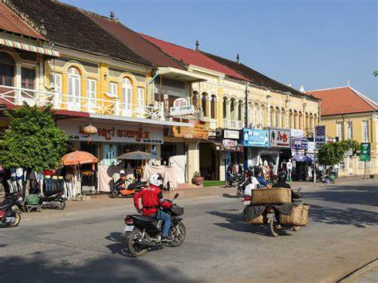
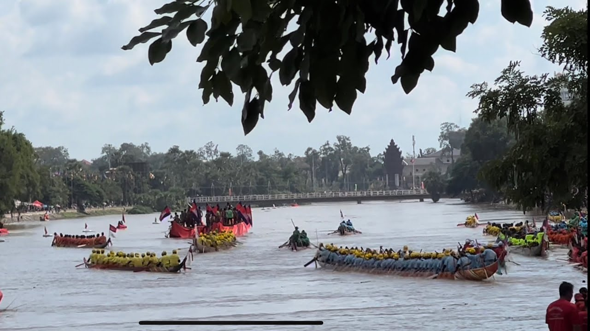

Battambang province, located in northwestern Cambodia, offers a captivating blend of history, culture, and natural beauty. It's known for its rich history, beautiful scenery, and delicious cuisine. Battambang province is a great place to visit for those who want to experience the culture, history, and natural beauty of Cambodia. With its friendly people, delicious food, and unique attractions, Battambang is sure to leave a lasting impression on visitors.
Here are some of the popular things to see and do in Battambang province:

Take a walk or rent a bicycle to explore the city's charming streets and colonial architecture. Be sure to visit the Psaar Nat (Central Market), Wat Phnom Banan (a 16th-century pagoda), and the Battambang Provincial Museum.This unique mode of transportation is a must-do for any visitor to Battambang. The Bamboo Train is a small platform made of bamboo that rides on railway tracks. It's a fun and scenic way to see the Cambodian countryside.

This mountain is home to a number of interesting caves, including a cave temple and a cave that was used as a killing field during the Khmer Rouge regime. There's also a beautiful view of the surrounding countryside from the top of the mountain.Battambang is known for its delicious food. Be sure to try some of the local specialties, such as Fish Amok (a creamy fish curry), Khmer Curry (a spicy curry with vegetables and meat), and Nom Banh Chok (rice noodles with fish sauce and vegetables).